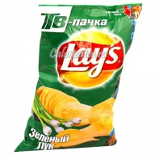
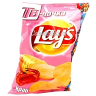
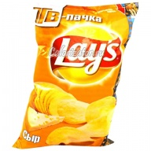

|  | Состав: картофель, растительное масло, идентичный натуральному ароматизатор (луковый порошок), порошок молочной сыворотки, сахар, сухие молочные сливки, усилитель вкуса и аромата (глутамат натрия, натрий 5 рибонуклеотид), лактоза, натуральные и идентичные натуральным вкусоароматические вещества, сырный порошок, регулятор кислотности (лимонная кислота, яблочная кислота), красители (аннато, экстракт паприки), соевое масло, соль. |
|  | Состав: картофель, растительное масло, натуральные и идентичные натуральным вкусоароматические вещества (содержат яичный порошок, рыбный порошок, рыбий жир, сухое молоко, порошок молочной сыворотки),сахар, усилитель вкуса и аромата (глутамат натрия, гуанилат натрия, инозинат натрия), подсластитель (аспартам), соль. |
|  | Состав: картофель, растительное масло, порошок молочной сыворотки, пшеничная мука, лактоза (из молока), усилитель вкуса и аромата (глутамат натрия, натрий 5 рибонуклеотид), гидрогенизированное растительное масло (в том числе соевое), глюкоза, натуральные, идентичные натуральным и искусственные вкусоароматические вещества, регулятор кислотности (лимонная кислота), сырный порошок, краситель (экстракт паприки, экстракт турмерика), чесночный порошок, белок молока, мальтодекстрин, соль. |